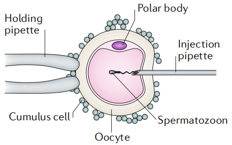
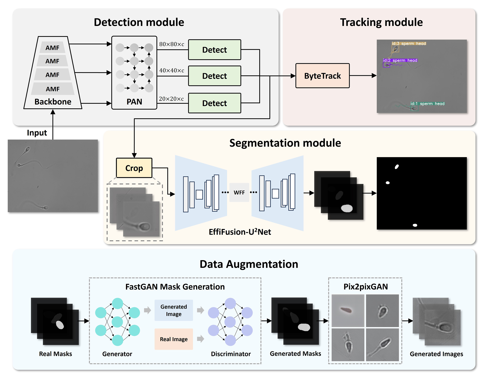
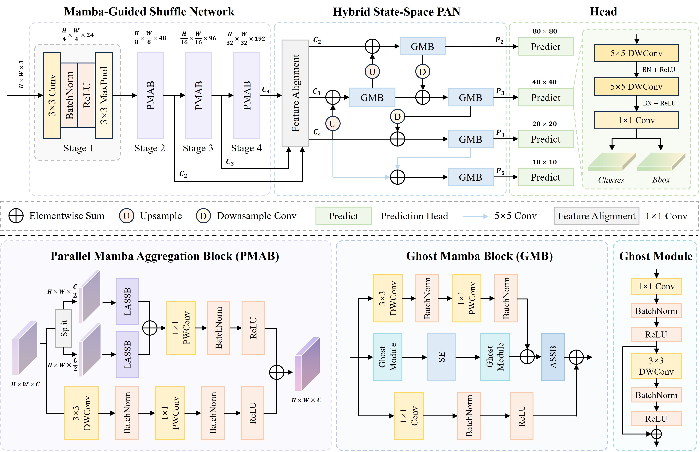
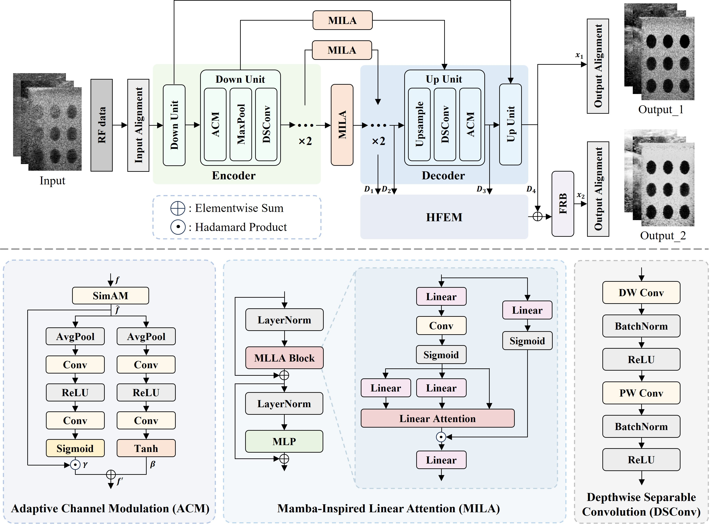
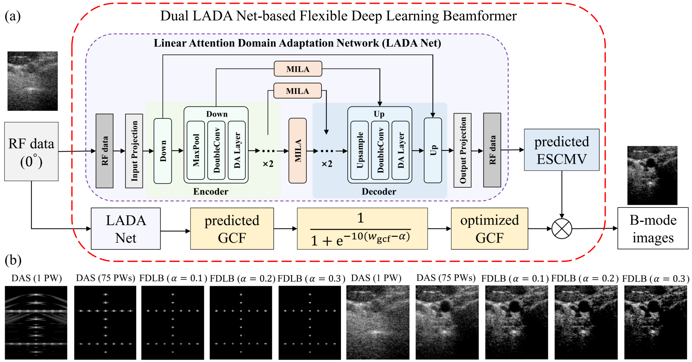

研究项目
深度学习在医学图像处理中的应用
研究内容二：基于小波变换和线性注意力的快速高保真傅里叶叠层显微成像

WM-FPM：小波变换与线性注意力结合的生成对抗架构
背景：傅里叶叠层显微成像（FPM）可实现大视场高分辨率成像，突破物镜数值孔径与空间带宽积的限制。但传统迭代FPM重建算法（如基于平移照明的相位恢复算法）速度极慢，难以实时应用。
方法：提出结合小波变换和线性注意力机制的生成对抗架构（WM-FPM）。将图像分解到小波域进行处理，利用线性注意力降低长距离依赖的计算复杂度，在保证重建质量的同时大幅提升推理速度。
结果：对于单张1.51亿像素图像，WM-FPM重建时间仅需5.63秒，相比传统迭代算法提速超100倍且无需牺牲重建保真度。该方法在低光剂量条件下同样表现优异。
博士研究计划：物理先验约束的深度学习光声成像去噪算法
融合物理先验知识的深度学习光声成像框架
痛点一：传统光声重建依赖理想物理假设（如均匀介质、点探测器），实际成像中存在声学衰减、非均匀传播、探测器响应不理想等问题，导致重建图像噪声大、采样伪影重、细节丢失严重。
痛点二：纯数据驱动的深度学习方法虽能从大量数据中学习映射关系，但缺乏物理约束，泛化性差，易产生非物理失真，在临床应用中存在可靠性风险。
解决方案：构建融合物理先验知识的深度学习框架，将光声成像的物理模型（波动方程、声传播算子、探测器模型）嵌入网络架构或损失函数中，实现低噪声、高物理保真的光声成像。
预期贡献：物理先验与深度学习的有机结合，有望突破现有光声成像的质量瓶颈，为光声显微成像在微血管网络、肿瘤微环境等生物医学应用中的定量分析提供可靠工具。

1111
111111
研究内容一：基于深度学习的实时精子质量评估

MTCA-Net：多任务级联分析网络
背景：不孕不育影响全球1.86亿人，男性因素占20%-70%。临床上普遍采用人类卵胞质内单精子注射（ICSI），需人工挑选单个活精子注入卵母细胞完成受精，该精子质量直接影响临床种植率和婴儿出生率。传统手工精子分析效率低、主观性强。
数据集：与安徽医科大学第一附属医院生殖中心合作，在60倍水浸物镜下拍摄精子图像，共形成3166个分割样本和397个检测样本，用于网络训练和测试。训练环境：NVIDIA RTX 3090。
方法：提出多任务级联分析网络（MTCA-Net），将目标检测、实例分割、运动追踪等任务统一到端到端框架中。在1920×1200分辨率下实现94 FPS实时精子追踪与分割，51 FPS联合分析，可同时量化评估精子活力与形态学参数。
应用落地：将MTCA-Net算法封装为软件，与奥林巴斯显微镜集成，构建可准确量化精子活力与形态学参数的计算显微系统。

HOPE-Net：Mamba引导的混合全感知增强网络
背景：临床场景中杂质较多且形态与精子相似，传统CNN感受野局限于局部区域，Transformer虽能建模全局依赖但计算复杂度高，难以在实时性要求下部署。
方法：设计了Mamba引导的ShuffleNet（MGS-Net）为主干网络，混合状态空间路径聚合网络（HSS-PAN）为颈部网络。HOPE-Net能够同时兼顾局部细节特征与全局上下文信息，通过选择性扫描机制自适应地聚焦于关键区域，在复杂临床场景中实现鲁棒的精子检测。
研究内容三：基于深度学习的超声平面波重建

U2-Net：基于U²-Net的可学习波束形成器
背景：平面波超声成像在单角度发射时帧率极高但图像质量差，多角度相干复合（CPWC）虽提升质量但帧率降低、计算复杂。传统自适应波束形成器（如最小方差法）依赖精确协方差矩阵估计，计算复杂度高。
方法：提出基于U²-Net深度学习模型的可学习波束形成器，从单角度平面波射频数据重建高质量超声图像。成像质量媲美传统75角度CPWC复合方法，同时显著降低计算复杂度。提出维纳后置滤波器与最小方差相结合的方法（RMTW-ESCMV）进一步提升成像质量。

DP-HAFNet：双路径分层自适应融合网络
背景：单一路径的深度学习波束形成器难以同时优化像素级重建质量和通道级特征表示，在旁瓣抑制和斑点纹理保留之间存在权衡。
方法：提出双路径分层自适应融合网络（DP-HAFNet），可同时预测基于像素的自适应权重输出和基于通道加权的波束形成输出。通过双路径架构与分层融合策略，有效抑制旁瓣和噪声，提升分辨率与对比度的同时保留斑点纹理。

LADA Net：线性注意力域自适应网络
背景：深度学习超声重建方法通常依赖大量配对的仿真-实测训练数据，域偏移问题导致网络在未见过的数据分布上泛化性能下降。域自适应融合是解决该问题的关键方向。
方法：提出基于线性注意力机制的域自适应网络（LADA Net），通过线性注意力高效建模跨域长距离依赖关系，减少对配准训练数据的依赖。在源域和目标域之间实现高效的特征对齐，提升跨域泛化能力。